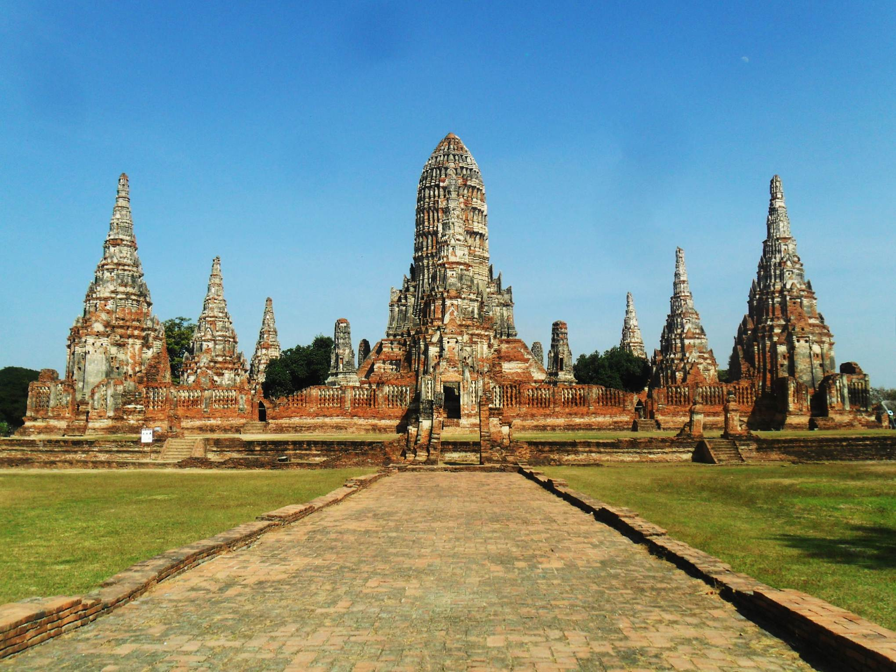

วัดไชยวัฒนาราม
วัดไชยวัฒนาราม ได้สร้างขึ้นในปี พ.ศ. 2173 โดยสมเด็จพระเจ้าปราสาททอง พระองค์โปรดเกล้าฯให้สร้างขึ้นบนที่ที่เป็นบ้านเดิมของพระองค์เพื่ออุทิศพระราชกุศลถวายพระราชมารดา แต่สมเด็จพระเจ้าบรมวงศ์เธอฯ กรมพระยาดำรงราชานุภาพทรงสันนิษฐานว่าวัดนี้สร้างขึ้นเพื่อเป็นอนุสรณ์แห่งชัยชนะเหนือนครละแวกโดยจำลองแบบมาจากปราสาทนครวัด